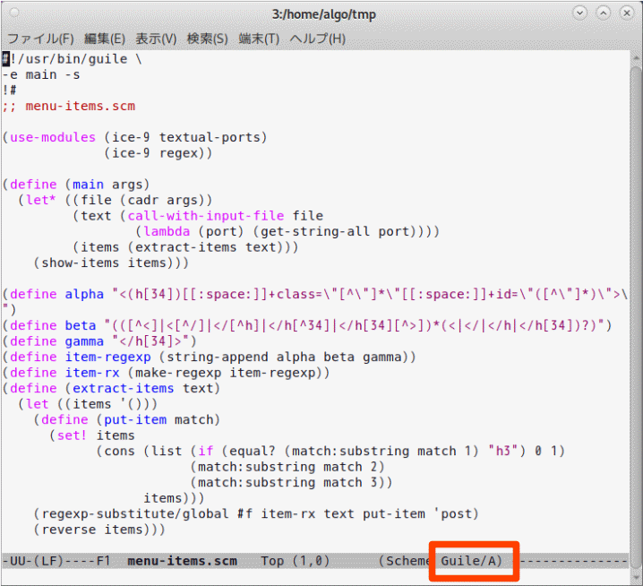
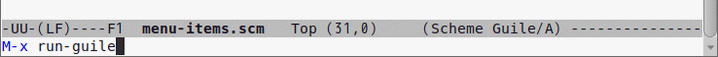
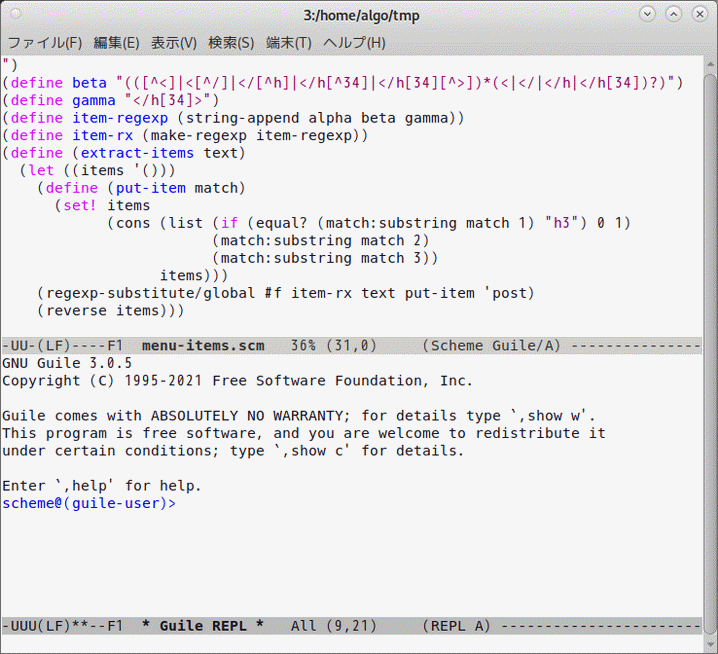

Guileのインストール
-
Debian 11(bullseye)用のGuileの公式バッケージとして guile-3.0 が配布されています．そこで，次のコマンドを実行してこのパッケージをインストールします．ドル記号はシェルのプロンプトを表しています．
$ sudo apt install guile-3.0 guile-3.0-doc guile-3.0-dev ↵時点のGuileの最新版は Guile 3.0.7 ですが，上記の公式パッケージは Guile 3.0.5 です． -
guile-3.0-doc
は，Info形式のマニュアルです．公式サイトで公開されているマニュアルと，Guileのバージョンは異なりますが，内容的には同じだと思います（
少なくとも目次は同じです；下記の追記参照）． - guile-3.0-dev は，Guileを利用しているソフトウェアをコンパイルするときなどに必要になります．おそらく，C言語と連携するときにも必要になるだろうと思います．
(追記:2022.3.8）
Guile 3.0.6 をリリースしたときにマニュアルの編成を変更したようです．
筆者が気づいた限りでは，3.0.5 の「6.7 Foreign Objects」と「6.8 Smobs」が，最新版のマニュアルでは「6.20 Foreign Objects」と「6.21 Smobs」に変わっています．
ついでに言うと，僅かなバージョン番号の違いとはいえ，バグ修正だけでなく機能追加も行われています．筆者が勉強していて気づいた限りで，例えば call-with-port は 3.0.5 では実装されていなかったのですが，3.0.6 以降では実装されています．
動作確認：REPLを動かしてみる
REPLの起動- GuileのREPLを起動するにはターミナル上で次のコマンドを実行します．
$ guile ↵これを実行すると，次のようなメッセージのあとにプロンプトが表示されて，プログラムが入力できるようになります．以下の scheme@(guile-user)> がプロンプトです．GNU Guile 3.0.5 Copyright (C) 1995-2021 Free Software Foundation, Inc. Guile comes with ABSOLUTELY NO WARRANTY; for details type `,show w'. This listram is free software, and you are welcome to redistribute it under certain conditions; type `,show c' for details. Enter `,help' for help. scheme@(guile-user)>
試しに簡単な式を入力して実行してみます．scheme@(guile-user)> (+ 10 20) ↵ $1 = 30 scheme@(guile-user)> (* 10 20) ↵ $2 = 200
-
REPLは次のいずれかによって終了できます．
scheme@(guile-user)> (quit) ↵ scheme@(guile-user)> (exit) ↵ scheme@(guile-user)> Ctrl-Dを押す scheme@(guile-user)> ,quit ↵ scheme@(guile-user)> ,q ↵
exit は quit の別名です．,quit はREPL固有のコマンドです．,q は ,quit の省略形です．GuileのREPL固有のコマンドは，Schemeの変数名や構文キーワードなどと確実に区別するため，カンマで始めることになっています．
REPLの設定変更
履歴機能の設定-
~/.guile（ホームディレクトリ上の.guile）というファイルに次のコードを保存すると，GuileのREPLで履歴機能が使えるようになります．このファイルがなければ新たに作ります．実行属性は不要です．
(use-modules (ice-9 readline)) (activate-readline)
- ~/.guile はGuileの初期化ファイルで，Schemeのプログラムを保存しておきます．Guileを起動したときに，初期設定の一環として，これに保存してあるプログラムが実行されます．上で示した1行目は (ice-9 readline) というモジュールをロードして，2行目はその中の activate-readline という手続きを実行します．
- 履歴は ~/.guile_history に保存されます．このファイルは自動的に生成されます．
- 上の設定を行うと，タブキーによる補完機能も使えるようになります．ただし，この補完機能は，REPLの実行環境における定義済みの変数名（標準的な手続きの名前など）を補完する機能であって，ファイル名やコマンド名を補完する機能ではありません．
-
初期化ファイル（~/.guile）に次のコードを保存すると，REPLのプロンプトを変えることができます．
(use-modules (system repl common)) (define my-prompt (lambda (repl) ;; need to be a procedure?? (format #f "guile~A> " (let ((level (length (cond ((fluid-ref *repl-stack*) => cdr) (else '()))))) (if (zero? level) "" (format #f " [~a]" level)))))) (repl-default-option-set! 'prompt my-prompt) ;; または (repl-default-prompt-set! my-prompt)これを設定すると， 以下のように，REPLのプロンプトが guile> に変わります．$ guile ↵ GNU Guile 3.0.5 Copyright (C) 1995-2021 Free Software Foundation, Inc. Guile comes with ABSOLUTELY NO WARRANTY; for details type `,show w'. This program is free software, and you are welcome to redistribute it under certain conditions; type `,show c' for details. Enter `,help' for help. guile>上のコードの中の "guile~A>" という文字列の中の "guile" という文字列を変更することによってプロンプトを変えることができます． -
（参考）元々のプロンプトの設定は次のようになっています．
(repl-default-prompt-set! (lambda (repl) (format #f "~A@\ATAT{}@~A~A> " (language-name (repl-language repl)) (module-name (current-module)) (let ((level (length (cond ((fluid-ref *repl-stack*) => cdr) (else '()))))) (if (zero? level) "" (format #f " [~a]" level))))))これは，language-name手続きによってREPLが処理中の言語の名前（'scheme'）を求め，module-name手続きによってREPLの実行環境としてロードしたモジュールの名前（'(guile-user)'）を求めて，format手続きを使ってそれらの情報からなるプロンプト（'scheme@(guile-user)>'）を文字列として作っています．その文字列がプロンプトとして自動的に表示されます．さらに，上のlet式（注：これは先に示したコードでも同じです）は，エラーが発生したときのネストの深さを求めていて，エラーが発生しているときにはその深さもプロンプトの一部にしています．エラーが発生したときのプロンプトの形式やREPLの動作については 「REPLによるプログラムの実行」 を参照して下さい．
-
端末で利用しているコマンドをREPLの中でも利用できれば便利だと思って，
筆者は ~/.guile の中に次のような定義を登録しています．
(define (myload filename) (let* ((homedir (passwd:dir (getpwuid (getuid)))) (fname (if (char=? (string-ref filename 0) #\~) (string-append homedir (substring filename 1)) filename))) (primitive-load fname))) (define pwd getcwd) (define cd chdir) (define* (ls #:optional arg) (system (string-append "ls " (if arg arg "")))) (define (less filename) (system (string-append "less -X " filename)))myload 手続きは，ファイル名（filename）の先頭がティルダ（~）だったとき， それをホームディレクトリに変更してファイルをロードします．その他のものは， 端末上で使えるコマンドをREPLでも使えるようにしたものです．system 手続きを使えば， 色々なコマンドを簡単にREPLでも使えるようになります．
Geiser on Emacs
Geiser はEmacs専用のパッケージです．Schemeのプログラムを編集する際に処理系依存のマイナーモードを設定したり，ファイル名補完機能を持ったREPLがEmacs上で利用できたりします． Guile[4.5 Using Guile in Emacs] でも検討事項の1つとして紹介しています． 以下，筆者が試した範囲で，Geiser について説明します． お試し程度の内容ですが，手がかりにはなると思います． Geiserのインストール Deiban 11(bullseye) では，以下のパッケージをインストールすれば， 直ちに Geiser が使えるようになります．
$ sudo apt -y install elpa-geiser↵
(参考)
GeiserのWebページ では，elpa を使う方法を説明しています．こちらでインストールしたほうが，より新しい Geiser が使えるかも知れません．
Guile マイナーモード
後述する設定をいっさい行わずに，
Emacsを起動してSchemeのプログラムファイルを開いてみると，「Guile」がマイナーモードに設定されています（下図参照）．

Geiser のデフォルトの設定では，拡張子が .scm のファイルを開くと，
従来の Scheme モード（メジャー）に加えて Guile モード（マイナー）を設定するようです．筆者が経験した限りでは，Guile Scheme に固有の幾つかの構文キーワード（lambda* や let*-values など）がハイライトされます．
それから，「Guile/A」の /A は autodoc モードというものを表しているようなのですが，プログラム編集中にそれがどのように機能するのかは分かりません．
Geiser REPL の起動
Emacs上でREPLを起動するには，Emacsのミニバッファで下図のコマンド（M-x run-guile）を実行します．

これを実行すると，REPLが画面分割されて表示されます（下図）．
以後，このREPLをGuileのREPLと同様に操作できます．

注意
Geiser REPLは，Guile の REPL をエミュレートするために，Emacs Lispを使って開発されたREPLです．そのため，Guile REPL に対して利用可能な機能が使えないこともあります．
例えば，プロンプトを変えることは難しそうです．また，Cntr-D は使えません．
利点
筆者が思いつく範囲で，Geiser REPL は，Guile REPL に比べて次のような利点があります．
- ファイル名補完ができます．これは大きい利点だと思います．
- REPLのセッション全体をテキストデータとして保存できます．
- 手続きや変数に関するinfoドキュメントを簡単なキー操作で参照できます． マニュアルは頻繁に参照するので，これは便利かも知れません．
| キー | 意味 |
|---|---|
| TAB | 定義済みの手続き名や変数名，およびファイル名の補完． |
| C-c C-q |
Geiser REPL を終了します．ただし，バッファは閉じません． ,q や (exit) や (quit) でも終了できます． |
| C-c C-z | REPLを再開します． |
|
C-↑ C-↓ |
履歴操作．過去の入力が再利用できます． ただし，履歴は巡回的に変化して，最古入力や最新入力で止まることはありません． 履歴を巡回してみると，現在入力として空白が表示されるので，それによって履歴中の現時点を把握することができます．なお，履歴操作は下記のプロンプトジャンプ（C-c C-p と C-c C-n）とエンターキーを組み合わせても実行できます． |
|
C-c C-k C-c C-c |
処理中の評価に割り込んで，エラーとして中止します． なお，Ctrl-C は，Geiserにおける多くのキー操作の接頭辞になっていて Geiser に捕捉されてしまうので，割り込めません． |
| C-c C-p | 1つ前のプロンプトにジャンプします．Geiser:Cheat sheet には記載されていませんが，Geiser REPL のプログラム（geiser-repl.el）の中で定義されています． プロンプトにジャンプしてエンターキーを押すと，そのプロンプトの入力を引き連れて現在のプロンプトに戻ることができます． |
| C-c C-n | 1つあとのプロンプトにジャンプします．Geiser:Cheat sheet には記載されていませんが，Geiser REPL のプログラム（geiser-repl.el）の中で定義されています． プロンプトにジャンプしてエンターキーを押すと，そのプロンプトの入力を引き連れて現在のプロンプトに戻ることができます． |
| C-c C-d C-i | 手続きや変数に関するinfoドキュメントを表示します． マニュアルは頻繁に参照するので，これは便利かも知れません． |
- Geiser REPL を C-c C-q や (quit) などで終了せずに Emacs を終了すると， そのセッションの履歴は保存されないかも知れません．
- REPLの終了（C-c C-q）のつもりで， 誤って C-x C-q を押してしまことがあります． このキー操作はバッファをread-onlyにしてしまって， キー入力を受け付けなくしてしまいます． もう一度，C-x C-q を押すと元に戻ります．
-
(setq geiser-repl-query-on-kill-p nil)
Geiser REPL を終了しても，それを実行していたバッファは閉じずに残ります． そのため，デフォルトでは（あるいは上記の nil を t にすると），Emacs は， 終了時に Geiser REPL セッションの内容をすべて捨ててよいかどうか質問してきます． 上記の設定をすると，Emacs は質問せずに終了します． -
(setq geiser-repl-use-other-window nil)
デフォルトでは（あるいは上記の nil を t に設定すると）， Geiser REPL は画面分割されて表示されます． 上記の設定をすると，画面分割されずに別画面で表示されます． 筆者は，画面分割を好まないので，この設定は個人的に大切です． -
(setq geiser-repl-history-no-dups-p nil)
デフォルトでは（あるいは上記の nil を t に設定すると）， Geiser REPL への新たな入力が過去の入力と重複しているとき， 新たな入力は履歴ファイルに記録されません． でもそれだと，時系列変化といった履歴の重要な性質が失われてしまいます． 上記の設定をすると，すべての入力が履歴に記録されます． -
(setq geiser-repl-history-filename "~/.emacs.d/geiser-history")
これは履歴ファイルを指定しています． これを指定しなかった場合，どこに保存されるのかよく分かりません． 実際の履歴ファイルは .guile といった拡張子が付くようです． おそらく拡張子は処理系の名前を表していると思います．従って， 例えば Racket REPL をエミュレートとしたときには .racket といった拡張子が付くものと予想されます． -
(setq geiser-active-implementations '(guile))
これは特に必要ありません．この設定は気休めにすぎません． 分かってはいるのですが，これを設定すると，M-x run-guile以外にもM-x geiser や M-x run-geiserでもGeiser REPL（Guile REPLのエミュレータ）を起動できます． 実は，run-guile は使わずに geiser を使っています． ちなみに，これを設定しないで，M-x geiser または M-x run-geiser を実行すると， どの処理系をエミュレートするか質問してきます． そのときに，例えば racket と答えると Racket の REPL をエミュレートします．
;;
;; ~/.guile
(use-modules (ice-9 readline))
(activate-readline)
(use-modules (system repl common))
(repl-default-option-set! 'on-error 'report)
;; 'debug or 'backtrace is available instead of 'report.
(define my-prompt
(lambda (repl) ;; need to be a procedure??
(format #f "guile~A> "
(let ((level (length (cond
((fluid-ref *repl-stack*) => cdr)
(else '())))))
(if (zero? level) "" (format #f " [~a]" level))))))
(repl-default-option-set! 'prompt my-prompt)
;; (repl-default-prompt-set! my-prompt) is also possible
;;
;; load original procedures
(let ((homedir (passwd:dir (getpwuid (getuid)))))
(primitive-load (string-append homedir "/.guile-init-more.scm")))
下記のファイルはREPLの中で手軽に使いたい手続きを独自に定義しています．
;;
;; ~/.guile-init-more.scm
;;
;; original procedures
;;
(define (myload filename)
(let* ((homedir (passwd:dir (getpwuid (getuid))))
(fname (if (char=? (string-ref filename 0) #\~)
(string-append homedir (substring filename 1))
filename)))
(primitive-load fname)))
(define pwd getcwd)
(define cd chdir)
(define* (ls #:optional arg)
(system (string-append "ls " (if arg arg ""))))
(define (less filename)
(system (string-append "less -X " filename)))
このように分割した上で，Emacsの初期設定ファイル（init.el）に次の設定を追加します．
- (setq geiser-guile-init-file "~/.guile-init-more.scm")